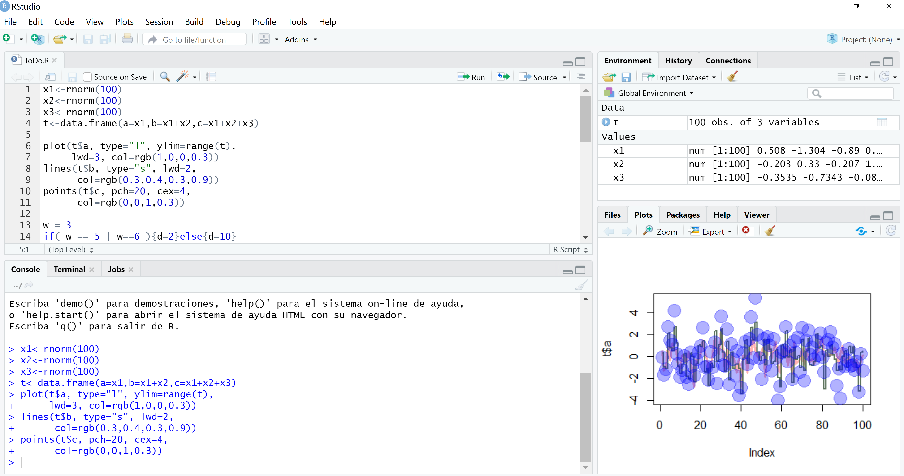

Una breve introducción a R
1 Introducción
1.1 Motivación
- R es un poderoso lenguaje y entorno para computación estadística
- R es un proyecto de dominio público \(\Longrightarrow\) La principale ventaja de R es que es un software libre y existe mucha ayuda disponible en línea
- R puede ser usado tal como viene, pero con fines educativos en este curso preferimos usar R en combinación con la interfaz RStudio (también freeware), que tiene un diseño organizado y varias opciones adicionales
1.2 Empezando
Instalar R
- Para instalar R en su computadora, vaya al sitio web de R: https://www.r-project.org
- Haga lo siguiente (asumiendo que usted trabaja con un sistema operativo Windows):
- dar clic en descargar CRAN en la barra izquierda
- elige un sitio de descarga
- elija Windows como sistema operativo
- dar clic en base
- elija Descargar la última versión para Windows
Instalar RStudio
- Para instalar RStudio vaya a: https://rstudio.com
- Haga lo siguiente (asumiendo que usted trabaja con un sistema operativo Windows):
- clic Descargar RStudio
- clic Descargar RStudio Desktop
- clic Recommended For Your System
- descargue y instale el archivo .exe
Interface de RStudio

- Abajo a la izquierda: ventana de consola (también llamada ventana de comando). Aquí puede escribir comandos simples después del indicador ‘>’ y R ejecutará su comando
- Arriba a la izquierda: ventana del editor (también llamado \(script\)). Hoja de texto donde se van guardando los códigos. Esta ventana puede abrirse por File \(\rightarrow\) New \(\rightarrow\) R script. Para ejecutar una línea de código se puede hacer clic en Run o presionar CTRL+ENTER
- Arriba a la derecha: ambiente/environment. En la ventana de ambiente puede ver qué datos y valores tiene R en su memoria. Puede ver y editar los valores haciendo clic en ellos. La ventana del historial/history muestra lo que se ha escrito anteriormente
- Abajo a la derecha: ventana de Files / Plots / Packages / Help / Viewer. Aquí puede abrir archivos, ver gráficos (también gráficos anteriores), instalar y cargar paquetes o usar la función de ayuda
Directorio de trabajo
El directorio de trabajo es la carpeta donde se cargan y se guardan los archivos con lo que se están trabajando
Antes de empezar a trabajar en R, se debe fijar el directorio de trabajo donde todos los datos y archivos se van a guardar
Para fijar el directorio escriba el siguiente código:
setwd("nombre_directorio").Por ejemplosetwd("D:/Users/R/Introducción a R")Otra forma es: en la ventana de abajo a la derecha ir a Files, dar clic en los 3 puntos (…), buscar y seleccionar la carpeta, luego ir a More y dar clic en Set As Working Directory
Se debe aseguar que las barras sean barras diagonales a la derecha (/) y no olvidar las comillas (""). R distingue entre mayúsculas y minúsculas, así que se debe asegurar escribir mayúsculas cuando sea necesario
Librerias
- R realiza sus funciones estadísticas y análisis de datos utilizando paquetes o librerias. Con la instalación estándar de R, muchos de los paquetes se instalan
- Para obtener una lista de todos los paquetes instalados, se debe ir a la ventana de paquetes o escribir library() en la consola. Si la casilla del paquete se encuentra seleccionada indica que el paquete se encuentra cargado y se puede usar
- Existen muchos más paquetes disponibles en la website de R (CRAN). Si se quiere instalar y usar un paquete se debe hacer lo siguinete (por ejemplo, el paquete llamado “geometry”)
para instalar el paquete se debe escribir
install.packages("geometry")luego para ponder en uso el paquete se debe escribir
library(geometry)